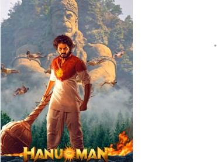

Salaar: Part 1 - Ceasefire, helmed by Prashanth Neel, unfolds in the politically charged Khansar. Prabhas portrays Deva, navigating power struggles and personal vendettas amid 101 tribes divided into three factions. Prithviraj Sukumaran as Vardharaja adds complexity to the narrative.
The central focus of the film revolves around the transformation of two best friends into bitter enemies.The film adopts an unconventional approach, leaning towards international cinema with a dark palette and minimal music. It relies on situational anthems and nuanced performances to enhance the drama. Deva's character, portrayed by Prabhas, balances raw power with emotional depth, while Vardharaja embodies a young heir entangled in political turmoil.
While violence is present, the focus lies on drama, setting the stage for intense action. Salaar: Part 1 combines political intrigue with high-stakes action, appealing to fans of grand narratives. Despite requiring patience initially, the film promises an engaging experience, setting expectations high for Salaar: Part 2.
Eagerly waiting for part 2!!!!
"Hanuman" marks a significant step forward in Indian animated filmmaking, albeit not reaching Disney's finesse. The creators commendably capture elements reminiscent of Disney's "The Lion King" and "Tarzan" in their animation style. The movie delves into the legendary tale of the Hindu monkey God, Hanuman, son of the wind God Varun and Anjani, an incarnation of Lord Shiva. Familiarity with the Hindu epic Ramayana enhances the viewing experience, though it may leave those unfamiliar with the story puzzled at times.
Children are bound to adore the film while adults can appreciate its efforts. It's a recommended choice for family entertainment. The animation quality is commendable, coupled with a captivating soundtrack. However, the assumption of viewers' prior knowledge of the Ramayana and the need for more detailed storytelling are notable drawbacks. Nonetheless, the adorable portrayal of young Hanuman remains a highlight.
"Hanuman" impresses notably with its climax, evoking goosebumps as the real Hanuman emerges, setting the stage for the anticipated continuation in part 2 of the story.
Can't wait for part 2!!!!!!!
In "Jailer," Tiger Muthuvel Pandiyan, portrayed by Rajinikanth, a retired jailer leading a peaceful life, faces tragedy when his son, a police officer, goes missing during a mission against idol thieves. Blaming his son's upbringing for the mishap, Muthuvel sets out on a mission of revenge. Director Nelson establishes the plot slowly, taking over 40 minutes to gain momentum. Unlike typical Rajinikanth films, there's a lack of the grand introduction scene, yet the second half compensates with mass sequences and glimpses into Muthuvel's past.
However, the climax feels dragged and underwhelming. The film's dark comedy, effective in Tamil, may not translate well in other languages. Cameos by stars like Shivarajkumar and Mohanlal add to the film's appeal, but the emotional depth between Muthuvel and his son remains underexplored. Despite Rajinikanth's charisma, "Jailer" falls short of expectations, relying heavily on his star power.
The music, composed by Anirudh, enhances the cinematic experience in "Jailer." Anirudh's background score seamlessly integrates with the film's narrative, adding depth to key moments and amplifying the emotional impact. His expertise in crafting impactful background music contributes significantly to the overall atmosphere and tension of the movie, elevating its viewing experience.